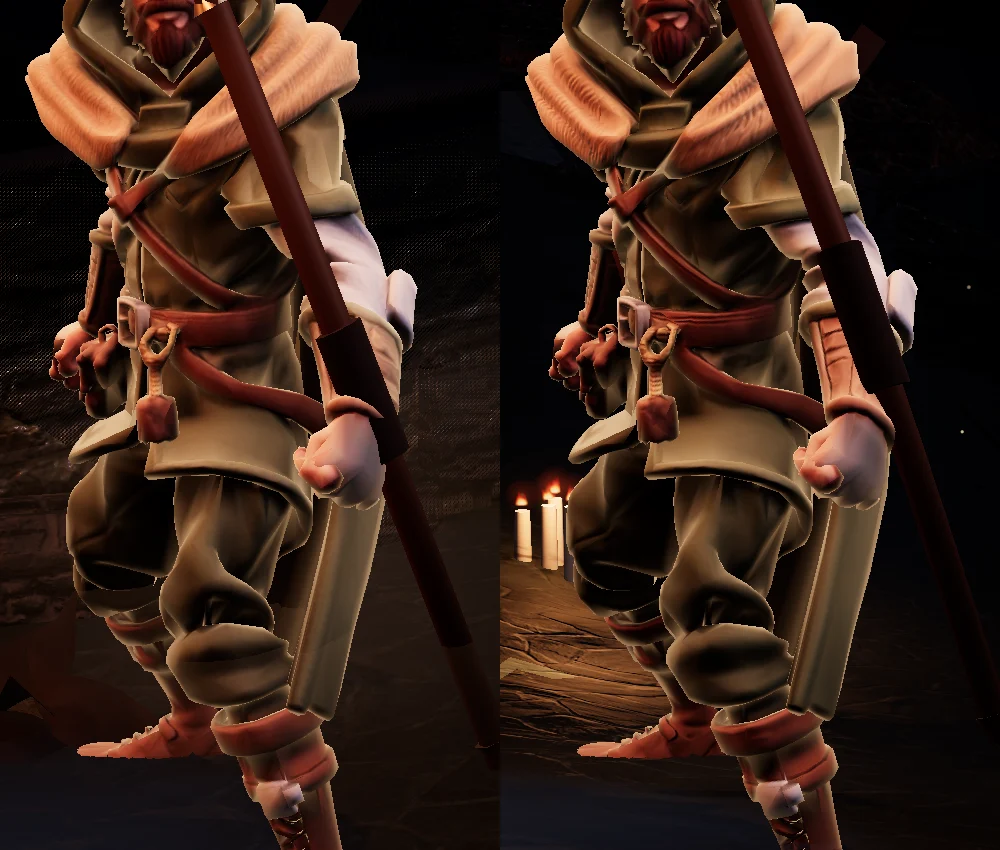
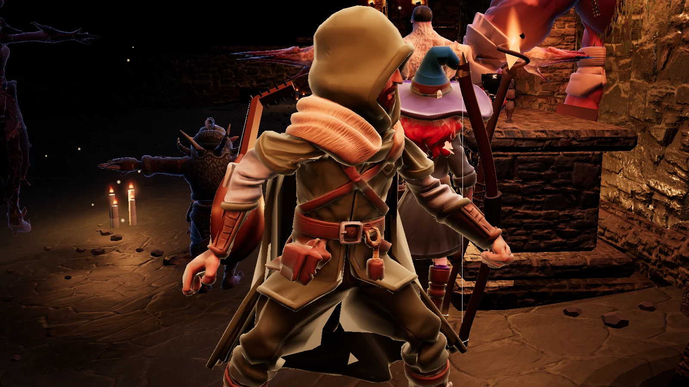
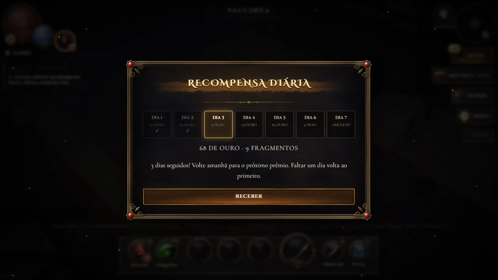

Os personagens ganharam texturas limpas e relevo, o alaúde foi refeito, o jogo ficou com menos da metade do tamanho e agora há prêmio diário e ranking online.
Personagens refinados
As texturas do menestrel, da Lia, dos moradores, dos bichos e de todos os monstros passaram por ampliação com inteligência artificial, que limpou a compressão borrada e recuperou o traço do pano, do couro, da pele e do metal. Cada personagem também ganhou relevo: a luz das tochas agora desenha dobras, costuras, fivelas e a trama do tecido.

Antes (esquerda) e depois (direita).

O menestrel com o alaúde novo nas costas.
O alaúde nas costas do menestrel deixou de ser um disco chato: agora tem o corpo em gota feito de gomos de madeira, tampo de abeto com roseta entalhada, braço com trastes, cravelhal dobrado para trás e cordas em pares.
Menos da metade do tamanho
O jogo para Android caiu de cerca de 228 MB para cerca de 107 MB. As músicas usam um formato mais eficiente, e só as do começo (e uma de cada lugar) vêm no jogo; as outras são baixadas na primeira vez que tocam e ficam guardadas no aparelho. Sem internet, toca uma faixa que já esteja nele.
Recompensa diária e ranking
A primeira entrada do dia dá um prêmio numa escada de sete dias: ouro que cresce com o seu nível, fragmentos do ferreiro no 3º e no 6º dia, e ouro em dobro com um amuleto de fuga no 7º. Faltar um dia volta ao primeiro. No menu inicial, RANKING mostra os 50 que desceram mais fundo; quem entra com Google aparece com o primeiro nome e a inicial do sobrenome.

A escada de sete dias da recompensa diária.
O diário ganhou seis feitos: Veterano (nível 10), Herói de Valcinza (nível 25), Desbravador (10º andar), Nas Entranhas (25º andar), Batismo de Fogo (um andar do Inferno) e Fiel à Balada (7 dias seguidos).